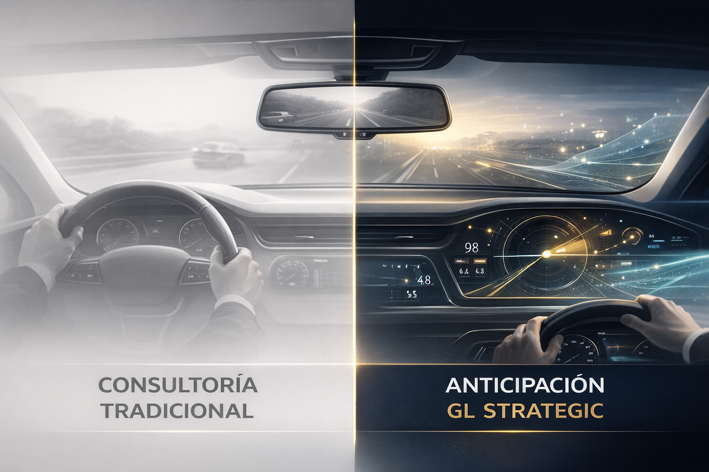
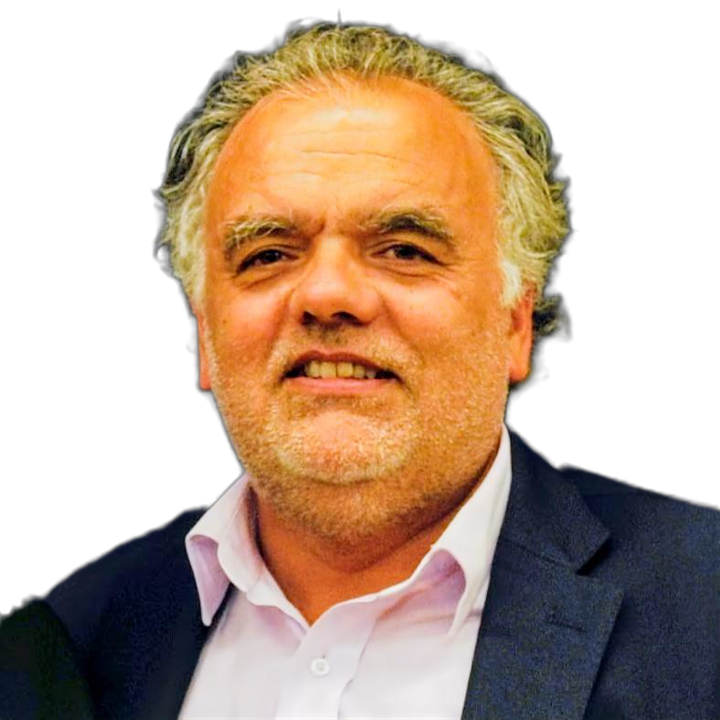
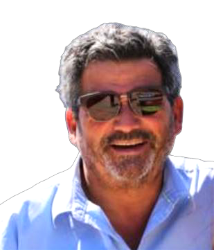
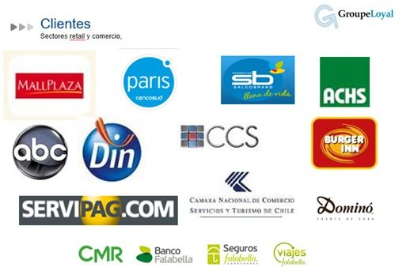
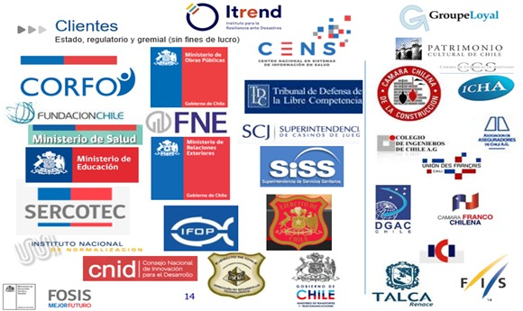
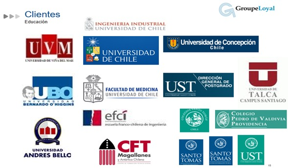
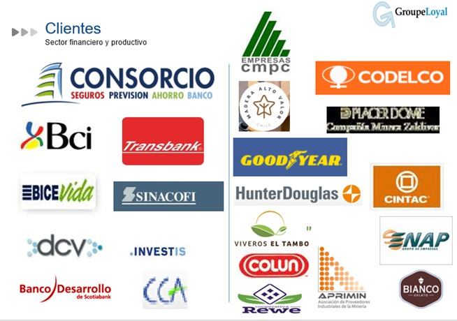
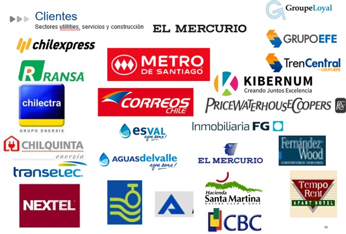

Ingeniería de Anticipación
Integramos la inteligencia colectiva de 2.000 expertos y 115 comisiones técnicas del Proyecto País para transformar la incertidumbre en ventaja estratégica.
Red de 2.000+ expertos · 115 comisiones técnicas · +20 años de anticipación
Visión integrada del desarrollo nacional que transforma incertidumbre en ventaja estratégica
Marco analítico que detecta señales débiles antes que el mercado y el gobierno
Conocimiento profundo de dinámicas regionales, sectoriales y culturales de Chile
Soluciones fundamentadas en datos y validadas por red multidisciplinaria
Historial de Precisión Predictiva
En GL Strategic, nuestro ADN es la resiliencia y la colaboración profunda que caracterizan a Chile: una cultura forjada por la adversidad, la minga y la herencia mapuche. Esta identidad territorial y mestiza impulsa Innovación bajo presión y escasez y gestión colectiva.
A diferencia de las grandes consultoras, trabajamos solo con consultores senior y socios. Nuestra mirada combina conocimiento técnico, visión regional y precisión predictiva, anticipando grandes quiebres nacionales antes que el mercado y el gobierno.

Espejo Retrovisor
Mientras gobierno y mercado reaccionan al pasado, GL Strategic anticipa el futuro, detectando tenues señales en la institucionalidad, la cultura, la política, los sectores económicos, los gremios, con metodologías probadas.
En las últimas dos décadas nuestra red de expertos (PPCI) anticipó con una década de antelación: 1) El Estallido Social de 2019 (previsto en 2011) y 2) El Estancamiento Económico iniciado el 2014 (advertido en 2005).
Expertos en adaptación y gestión de crisis. Innovación bajo presión y escasez.
ADN originario: liderazgo horizontal y adaptativo.
Gestión por compromiso y sentido colectivo.
Proyecto País 2050 / BC
Red de expertos anticipa quiebres estructurales:
Conocemos Chile: identidad, regiones y cultura organizacional.
Consultores senior. Transformación real:
Critical Adjustment Matrix (CAM+) es un diagnóstico integral de 14 componentes clave que evalúa la capacidad adaptativa de tu organización, seguido de la metodología Pré-Futur — 7 etapas de transformación anticipativa que conectan visión estratégica con ejecución operacional. Es especialmente diseñado para organizaciones que necesitan no solo entender dónde están, sino anticipar dónde deben estar en un entorno volátil.
Diagnóstico y Transformación
La Realidad:
Disrupción, crisis climática. 90% estrategias fracasan por ejecución.
CAM+:
Diagnóstico en 14 componentes. Integra estrategia, cultura, tecnología.
Pré-Futur:
7 etapas para la transformación anticipativa.
Por qué:
Reduce ciclos, elimina subsidios cruzados, construye resiliencia anticipativa.
4 Cuadrantes Estratégicos
EXCEL
Bajo desafío + Alta capacidad. Organizaciones viables que aprenden rápido. Consolidar ventajas.
ADHOC
Alto desafío + Alta capacidad. Capacidad alta, pero el desafío obliga a ajustes ad hoc al reto.
REBORN
Bajo desafío + Baja capacidad. Los desafíos crecen: hay que renacer para ganar capacidad de adaptación.
RIP
Alto desafío + Baja capacidad. Riesgo crítico. Reestructuración total.
Evalúa la apertura y capacidad de adaptación frente a transformaciones.
Capacidad de anticipación y análisis de escenarios futuros.
Claridad y coherencia en la dirección estratégica y modelo de negocio.
Liderazgo colaborativo, confianza y valores compartidos en la organización.
Disponibilidad y desarrollo de habilidades críticas alineadas con la estrategia y la transformación digital.
Perfiles, motivación, liderazgo y capacidad de retención de talento clave para la transformación.
No es solo tecnología: es estrategia y modelo de negocio. Cambiamos mentalidad más que infraestructura, mirando clientes, competencia, datos y adaptación de la propuesta de valor.
ABC/ABM: Rentabilidad real por línea. EVA: Valor económico agregado. Decisiones basadas en creación de riqueza, no promedios.
Capacidad de generar y validar nuevas ideas de forma sistemática.
Gobernanza, procesos y sistemas de gestión integrados, eficientes y alineados con la estrategia.
cumplimiento de exigencias de mercados de exportación y de clientes exportadores.
Cumplimiento normativo, regulatorio y estándares de la industria.
Evaluación y proyección económica financiera (evaluación de proyectos, flujos, estados financieros).
Diagnóstico en prácticas de ingeniería/procesos del rubro.
1
2
3
4
5
6
7
Ciclo continuo: cada fase retroalimenta la siguiente en mejora permanente.
Detección rápida de urgencias, riesgos inmediatos y disposición al cambio (Readiness) de la organización.
Evaluación profunda de la madurez adaptativa mediante 12 componentes críticos de la organización.
Definición de escenarios futuros y apuestas estratégicas alineadas con el propósito corporativo.
Creación de hoja de ruta, gobernanza y selección de herramientas tácticas para la ejecución.
Ejecución mediante pilotos ágiles, Quick Wins y ciclos de aprendizaje rápido validados en terreno.
Institucionalización de nuevos hábitos, liderazgo colaborativo y valores adaptativos en la organización.
Medición de impacto y retroalimentación para reiniciar el ciclo de mejora continua.
Ciclo continuo: cada fase retroalimenta la siguiente en mejora permanente.
Aceleración de ciclos de innovación y toma de decisiones mediante gobernanza ágil y datos en tiempo real.
Alineación total entre cultura, estrategia y tecnología. Toda la organización habla el mismo idioma.
Resiliencia ante crisis mediante gobernanza anticipativa y capacidad de adaptación integrada. Liderar desde la anticipación.
Creación de valor sostenible y medible (EVA, satisfacción de clientes y rentabilidad real).
"Las organizaciones del futuro no serán las más grandes, sino las que sepan transformarse a tiempo."
Centro de Anticipación y Creación de Futuro (CAF) es una estrategia integral para transformar territorios en ecosistemas productivos sostenibles mediante ecoparques industriales con simbiosis económica, energía verde, infraestructura compartida y gobernanza clara. Combina oportunidades de inversión verde (hidrógeno, litio, data centers, acuicultura) con permisos pre-aprobados que reducen el Time-to-Market de 10 a 2 años.
Colaboración donde residuos de una empresa son materia prima de otra. Economía circular real.
Permisos pre-aprobados (ambientales, territoriales). Reducción drástica del Time-to-Market.
Energía solar 15-20 USD/MW. Atrae industrias intensivas en energía para producción local verde.
Desaladora, gestión de residuos, redes energéticas compartidas. Economías de escala.
Concesiones 50 años, Ley Arica, Zona Franca. Seguridad y gobernanza para inversionistas.
100% energía renovable. Eficiencia hídrica y economía circular integradas desde el diseño.
Las visualizaciones mostradas son ideas y maquetas conceptuales con fines ilustrativos.
Terminal marítimo, desaladora a nivel del mar, infraestructura logística. 55 ha en explanada baja.
Data centers, plantas síntesis, agroindustria, zona residencial. Sobre el farellón.
Parque solar gigante >100 MW. Desierto de Atacama, conexión directa sin costos de transmisión.
Borde del farellón. Hotelería, golf, marina, Crystal Lagoons. Retención de talento.
Zona Norte
Ecoparque Industrial Quebrada de Camarones. Radiación solar extrema, conectividad internacional y Zona Franca. Ideal para hidrógeno verde, data centers y agroindustria.
Nodo Logístico
Ecoparque Tarapacá y Parque Logístico Tarapacá. Acceso terrestre y portuario estratégico. Centro de distribución regional para minería y comercio transfronterizo.
Manufacturas Avanzadas
Ecoparque Biobío con centro de manufacturas avanzadas CAP. Siderurgia verde, reciclaje de metales y cadena de valor forestal sostenible.
Energía Extrema
Ecoparque Magallanes habilitado para energía eólica y logística extrema. Hidrógeno verde, metanol verde y e-fuels para navegación antártica y aviación.
Industrias Verdes
Ecoparque Aysén orientado a industrias verdes: acuicultura sostenible RAS, turismo de naturaleza y procesamiento de productos forestales no madereros.
Urbano Logístico
Ecoparque Huechuraba, nodo urbano logístico metropolitano. Data centers urbanos, economía circular, reciclaje avanzado y centros de distribución e-commerce.
Los territorios y propuestas listados corresponden a ideas y maquetas conceptuales.
Conocimiento Profundo + Ejecución
Su Socio Estratégico en Chile
Facilitamos entrada al mercado chileno con conocimiento territorial profundo, red de 2.000+ expertos del Proyecto País y expertise en permisos, gobernanza y relaciones comunitarias.
Desde due diligence hasta operación: identificamos oportunidades en energía verde, minería, tecnología, agricultura y más. Reducimos riesgos y aceleramos time-to-market.
Producción de H2V, amoníaco verde, metanol verde y e-fuels para aviación y transporte marítimo. Chile: hub mundial H2V.
Nitrato de Amonio producido con hidrógeno verde para minería regional (Chile, Perú, Bolivia) y agricultura global (Brasil). Menor huella de carbono en producción.
Hyperscale que aprovechan energía barata (80% costo operativo) y fibra óptica submarina. Clima estable reduce costos de refrigeración.
Minería de criptoactivos y supercomputación IA aprovechando energía solar barata. Clima estable reduce refrigeración. Estabilidad jurídica.
Procesamiento de carbonato/hidróxido de litio y fabricación de componentes de baterías (cátodos). Energía limpia para refinación.
Procesamiento de relaves mineros y chatarra electrónica (e-waste) mediante procesos metalúrgicos verdes. Economía circular aplicada.
Cultivo de Seriola, Camarones, Trucha usando sistemas de recirculación (RAS) y agua desalada. Bioseguridad y control total.
Cultivos hidropónicos de contraestación (Mango, Papaya, Cítricos) aprovechando radiación solar extrema y agua desalada.
Strategic Enterprise Management es nuestro enfoque integrado que une estrategia empresarial con ingeniería operacional rigurosa. Combinamos herramientas de clase mundial (ABC/ABM, EVA, Balanced Scorecard, reingeniería de procesos) con gestión del cambio y cumplimiento normativo (ESG & Compliance). Es especialmente efectivo para organizaciones que necesitan pasar de "buenas intenciones" a resultados económicos medibles y sostenibles.
Strategic Enterprise Management: Integración sistémica de estrategia, operación y tecnología.
90% de las estrategias fracasan por falta de rigor en implementación. Costos ocultos, subsidios cruzados y desconexión entre plan y operación erosionan valor.
Modelo que une visión de negocio con ingeniería dura. Evita gestión por promedios; usa datos, métricas y herramientas de clase mundial.
Revelamos rentabilidad real por línea de negocio y cliente. Eliminamos actividades sin valor agregado.
Economic Value Added: Decisiones alineadas con creación de riqueza real, más allá de utilidad contable.
Balanced Scorecard: Conectamos estrategia con operación diaria mediante tableros de control integrados.
Visualizamos relación causa-efecto para que toda la organización entienda su rol estratégico.
Cerramos brechas entre expectativa del cliente y servicio entregado (Service Quality Gaps).
Comparamos desempeño con mejores prácticas para identificar mejoras inmediatas.
No es tecnología; es estrategia y modelos de negocio. Cambiamos la mentalidad más que la infraestructura, mirando clientes, cómo competir, gestión basada en datos e innovación/adaptación de la propuesta de valor.
Planificar, aplicar y medir acciones sobre el factor humano para que los proyectos de cambio alcancen o superen sus resultados.
Integración de buenas prácticas ambientales, sociales y de gobernanza (ESG) alineadas con ODS (ONU, 2015) e ISO 26000
Autorizaciones y permisos necesarios. Patente comercial, normas locales y nacionales.
Ley 19.300. ISO 14001. Emisiones, residuos, huella ambiental, energía y agua.
Código del Trabajo. Ley 16.744. Seguridad, EPP, capacitación, derechos humanos.
Contabilidad ordenada. Libros Diario, Mayor, Inventarios, Balances.
Obligaciones SII. Impuesto a la Renta, IVA 19%, documentación de respaldo.
Ley 20.393. MPD (Modelo Prevención Delitos). Lavado de activos, terrorismo.
ISO 9001. SERNAC. Seguridad consumidor, precios correctos. gestión de brechas de calidad de servicio calidad. Procesos y TICs.
Igualdad de oportunidades. Flexibilidad horaria, conciliación laboral-personal.
Pacto Global ONU. Respeto DDHH en operaciones y cadena de suministro.
DS 594 Minsal. Habilitaciones. Mantenimiento infraestructura, trabajo remoto.
Maximización del EVA y optimización del uso del capital mediante decisiones basadas en valor económico real.
Reducción drástica de actividades sin valor agregado mediante ABM y rediseño de procesos.
Eliminamos "gestión por promedios". Decisiones quirúrgicas sobre productos, clientes y mercados.
Metodología respaldada por 2.000+ expertos Proyecto País. Precisión predictiva superior a Banco Central.
Consultores senior y socios se involucran directamente en su proyecto. Integramos ingeniería, legal, finanzas y gestión del cambio bajo un solo techo.
"Transformamos la incertidumbre en ventaja estratégica mediante la ingeniería de gestión."
Programas de formación especializada para aumentar la competitividad de gobiernos regionales, empresas públicas y emprendimientos territoriales mediante nuestras metodologías probadas.
Formación integral en diagnóstico organizacional y capacidad adaptativa para directivos públicos y privados.
Duración: 40 horas | Modalidad: Presencial + Online
Especialización en atracción de inversión, soft landing de proyectos y gobernanza de territorios productivos sostenibles.
Duración: 40 horas | Modalidad: Presencial + Online
Entrenamiento avanzado en herramientas de gestión: EVA, ABC/ABM, Compliance y gobernanza para directivos públicos y ejecutivos.
Duración: 32 horas | Modalidad: Presencial + Online
Diseñamos programas a medida para aumentar la competitividad territorial, alinear gobernanza regional con desafíos de inversión, y fortalecer capacidades de gestión en entidades públicas. Trabajamos con Gobiernos Regionales (GORES), CORFO, Asociaciones Gremiales y Consejos Empresariales para transferir metodologías probadas.
Arica & Parinacota
Tarapacá
Biobío
Magallanes
Socio Principal
Ing. Civil Industrial, Magíster en Economía. Ha liderado más de 500 proyectos de transformación organizacional y estrategia en Chile y Latinoamérica.
LinkedInSocio
Economista. Experto en desarrollo productivo, innovación y políticas públicas. Ex gerente de CORFO y consultor internacional.
LinkedIn
Socio
Ingeniero Informático. Especialista en transformación digital, eficiencia operativa, gestión de proyectos tecnológicos complejos y coach.
LinkedInSocio
Ing. Civil Industrial, MBA. Experto en liderazgo adaptativo, cambio cultural y coaching ejecutivo en grandes organizaciones.
LinkedInSocio
Abogada, Master en derecho de empresas, especialista en derecho corporativo y comercial, fusiones y adquisiciones, cumplimento normativo y juicios complejos.
LinkedInSocio
Ing. Civil Industrial, MBA. Experto en mejora de procesos, gestión de equipos y transformación operacional.
LinkedInSocio
Ing. Civil Industrial, MBA Tulane. Especialista en gestión regional, proyectos de inversión y desarrollo territorial.
LinkedIn
Estrategia
Ing. Civil y MBA PUC. Supply Chain. Experto en procesos complejos y servicios de ingeniería y estructuras para la minería.
LinkedInNormas
Normativa Contable y Tributaria.
LinkedInExperto en benchmarking
Especialista en benchmarking y análisis comparativo. Amplia experiencia en consultoría estratégica.
LinkedInProyectos
Ing. Civil Industrial. Especialista en ABC.
LinkedInComunicación
Master Periodismo. Comunicación Estratégica.
LinkedInFinanzas
Ing. Comercial. Directorios y Empresas Int.
LinkedInRiesgos
Analista Financiero. Financiero y riesgos.
LinkedInEstrategia y Operaciones
Ing. Civil Química. Más de 25 años liderando transformación organizacional en sector público y privado. Experta en Balanced Scorecard, gobernanza, calidad y excelencia operacional. Ha trabajado con MOP, CODELCO, Sodimac y organismos multilaterales.
LinkedInArica y Parinacota
Director Regional. Gestión regional zona norte y ecoparques territoriales. Director CAF zona norte.
LinkedInTarapacá
Experto en ecoparques industriales y zonas francas. Gestión de proyectos logísticos y territoriales.
LinkedInAntofagasta
Ing. Químico. Sostenibilidad y Calidad ISO.
LinkedInMaule
Ing. Civil Industrial. Prospectiva y Desarrollo Territorial.
LinkedInConcepción
Ing. Civil Industrial. Directora CAF Bio Bío y Temuco. Lidera proyectos de desarrollo territorial.
LinkedInTemuco
Gestión Regional.
LinkedInLos Lagos
Ing. Civil Industrial, MBA Tulane. Especialista en gestión regional, proyectos de inversión y desarrollo territorial.
LinkedInPerú
Coach ejecutivo y consultor internacional. Experto en liderazgo y desarrollo organizacional. Proyectos en peru.
LinkedIn



